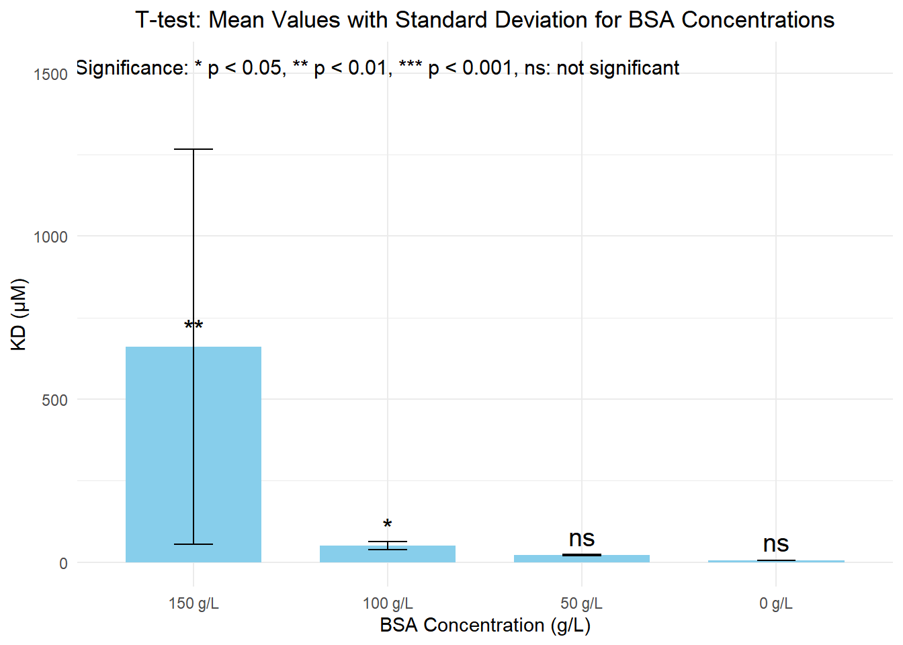

2024 | 8 | 15 Last compiled: 2024-08-16
Materials
Procedure
Solution A: 150 mM NaCl
Solution B: 25 mM Tris HCl, pH 8
Final Step: Interaction Buffer
2024 | 8 | 15 Last compiled: 2024-08-16
Materials
Procedure
Note: Sodium azide is not used, so ensure BSA solution is used within the day!
2024 | 8 | 15 Last compiled: 2024-08-16
Expression and Purification
The FRET pairs CyPet and YPet were cloned into pET28B for expression in BL21(DE3) after being N-terminally tagged to Ubc9 and the PCNA, respectively. For each gene, a BL21(DE3) cell line was inoculated 1:100, cultured at 37 °C to an OD of 0.6 at 600 nm, and then induced with 0.3 mM IPTG for an overnight period at 22 °C. After the cells were lysed with a sonicator using a lysis buffer (20 mM Tris-HCl (pH 7.4), 0.5 M NaCl, and 5 mM imidazole), they were centrifuged at 35,000× g. The soluble fraction was purified by 6×His tag to Ni-NTA beads affinity chromatography through a gravity column. The bound proteins were washed with Buffer 1 (20 mM Tris-HCl (pH 7.4), 0.3 M NaCl), Buffer 2 (20 mM Tris-HCl (pH 7.4), 1.5 M NaCl, and 0.5% Triton X-100), and Buffer 3 (20 mM Tris-HCl pH 7.4, 0.5 M NaCl, and 10 mM Imidazole). The proteins were eluted using the following Elution buffer (20 mM Tris-HCl, 200 mM NaCl, and 500 mM Imidazole) and dialyzed in 25 mM Tris-HCl (pH 8.0), 150 mM NaCl, and 1 mM DTT.
Sonicate the proteins for 10-15 min at 37°C
2024 | 8 | 16 Last compiled: 2024-08-16
Data
# Using data acquired from qFRET
data_150g <- c(124.3, 541.9, 1318)
data_100g <- c(64.44, 40.12, 49.2)
data_50g <- c(18.82, 22.03, 22.74)
data_0g <- c(4.76, 5.699, 5.587)Welch Two Sample t-test between each group and the control group (0 g/L)
150 g/L vs 0 g/L
t_test_150_vs_0 <- t.test(data_150g, data_0g)
print(t_test_150_vs_0)##
## Welch Two Sample t-test
##
## data: data_150g and data_0g
## t = 1.8759, df = 2, p-value = 0.2015
## alternative hypothesis: true difference in means is not equal to 0
## 95 percent confidence interval:
## -848.728 2160.831
## sample estimates:
## mean of x mean of y
## 661.400000 5.348667100 g/L vs 0 g/L
t_test_100_vs_0 <- t.test(data_100g, data_0g)
print(t_test_100_vs_0)##
## Welch Two Sample t-test
##
## data: data_100g and data_0g
## t = 6.4641, df = 2.007, p-value = 0.02291
## alternative hypothesis: true difference in means is not equal to 0
## 95 percent confidence interval:
## 15.45111 76.35823
## sample estimates:
## mean of x mean of y
## 51.253333 5.34866750 g/L vs 0 g/L
t_test_50_vs_0 <- t.test(data_50g, data_0g)
print(t_test_50_vs_0)##
## Welch Two Sample t-test
##
## data: data_50g and data_0g
## t = 12.763, df = 2.2403, p-value = 0.003884
## alternative hypothesis: true difference in means is not equal to 0
## 95 percent confidence interval:
## 11.01868 20.67732
## sample estimates:
## mean of x mean of y
## 21.196667 5.348667Statistical Plot
# A library part of tidyverse
library(ggplot2)
# Combining data into a data frame
data <- data.frame(
Group = rep(c("150 g/L", "100 g/L", "50 g/L", "0 g/L"), each = 3),
Value = c(data_150g, data_100g, data_50g, data_0g)
)
# Calculate means and standard deviations for each BSA Concentration
summary_stats <- aggregate(Value ~ Group, data, function(x) c(mean = mean(x), sd = sd(x)))
summary_stats <- do.call(data.frame, summary_stats)
summary_stats$Group <- factor(summary_stats$Group, levels = c("150 g/L", "100 g/L", "50 g/L", "0 g/L"))
# Perform T-tests and assign significance markers
t_test_150_vs_0 <- t.test(data_150g, data_0g)
t_test_100_vs_0 <- t.test(data_100g, data_0g)
t_test_50_vs_0 <- t.test(data_50g, data_0g)
# Adding significance markers based on p-values
summary_stats$Significance <- c(
ifelse(t_test_150_vs_0$p.value < 0.001, "***",
ifelse(t_test_150_vs_0$p.value < 0.01, "**",
ifelse(t_test_150_vs_0$p.value < 0.05, "*", "ns"))),
ifelse(t_test_100_vs_0$p.value < 0.001, "***",
ifelse(t_test_100_vs_0$p.value < 0.01, "**",
ifelse(t_test_100_vs_0$p.value < 0.05, "*", "ns"))),
ifelse(t_test_50_vs_0$p.value < 0.001, "***",
ifelse(t_test_50_vs_0$p.value < 0.01, "**",
ifelse(t_test_50_vs_0$p.value < 0.05, "*", "ns"))),
"ns"
)
# Plotting the data
ggplot(summary_stats, aes(x = Group, y = Value.mean)) +
geom_bar(stat = "identity", fill = "skyblue", width = 0.7) +
geom_errorbar(aes(ymin = Value.mean - Value.sd, ymax = Value.mean + Value.sd), width = 0.2) +
geom_text(aes(label = Significance), vjust = -0.5, size = 5) + # Significance markers
labs(title = "T-test: Mean Values with Standard Deviation for BSA Concentrations",
x = "BSA Concentration (g/L)",
y = "KD (μM)") +
theme_minimal() +
theme(plot.title = element_text(hjust = 0.5)) + # Centering the title
annotate("text", x = 3.5, y = max(summary_stats$Value.mean + summary_stats$Value.sd) * 1.2,
label = "Significance: * p < 0.05, ** p < 0.01, *** p < 0.001, ns: not significant",
hjust = 1, size = 4)
P value for 150 g/L to 0 g/L
t_test_150_vs_0$p.value## [1] 0.2014975P value for 100 g/L to 0 g/L
t_test_100_vs_0$p.value## [1] 0.02290546P value for 50 g/L to 0 g/L
t_test_50_vs_0$p.value## [1] 0.003884237